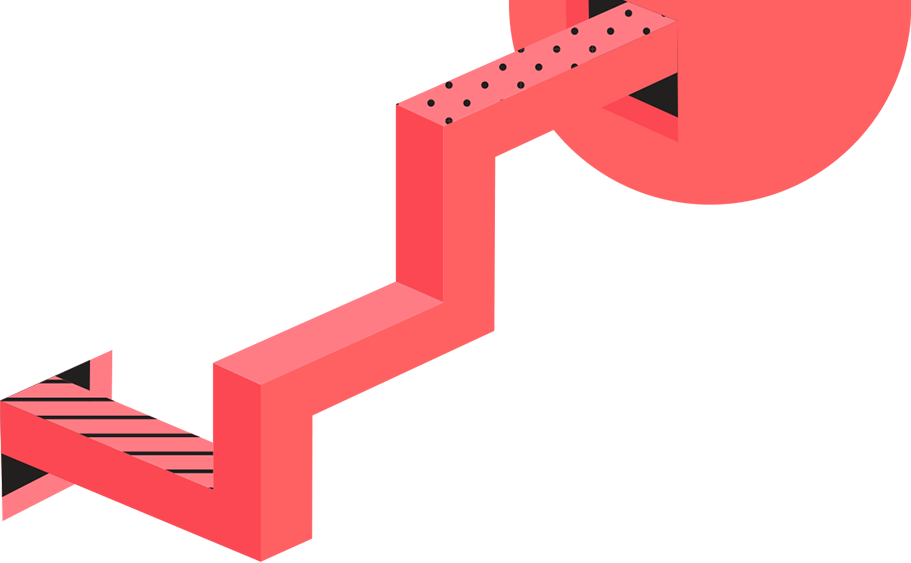

<div class="title-text">
  Стикерпак
</div>
<div class="lead-text">
  Один годный стикер заменяет пятьдесят
  сложносочиненных предложений.
  Качай и используй в рабочих чатах
</div>
<button tuiButton [disabled]="true" type="submit" class="tui-space_right-3 tui-space_bottom-3"
  appearance="secondary">
  <a routerLink="">
    Посмотреть стикеры!
  </a>
</button>

<svg width="510" height="510" viewBox="0 0 510 510" fill="none" xmlns="http://www.w3.org/2000/svg">
  <circle cx="255" cy="255" r="255" fill="#FF6062"/>
  </svg>
  <svg width="75" height="122" viewBox="0 0 75 122" fill="none" xmlns="http://www.w3.org/2000/svg">
    <path d="M77.3329 0L16.3507 16.3531L0 77.3442L44.6493 122L105.649 105.647L122 44.638L77.3329 0ZM44.0279 113.406L8.6103 77.9657L57.0055 65.0039L44.0279 113.406ZM62.4558 66.4599L97.8911 101.9L49.4959 114.88L62.4558 66.4599ZM24.1088 20.1173L72.5041 7.13783L59.5442 55.5401L24.1088 20.1173ZM77.9543 8.61156L113.39 44.0343L64.9945 56.9961L77.9543 8.61156ZM20.1144 24.1124L55.5498 59.5529L7.15454 72.5146L20.1144 24.1124ZM101.886 97.9054L66.4502 62.4649L114.845 49.5031L101.886 97.9054Z" fill="#231F20"/>
    </svg>
    